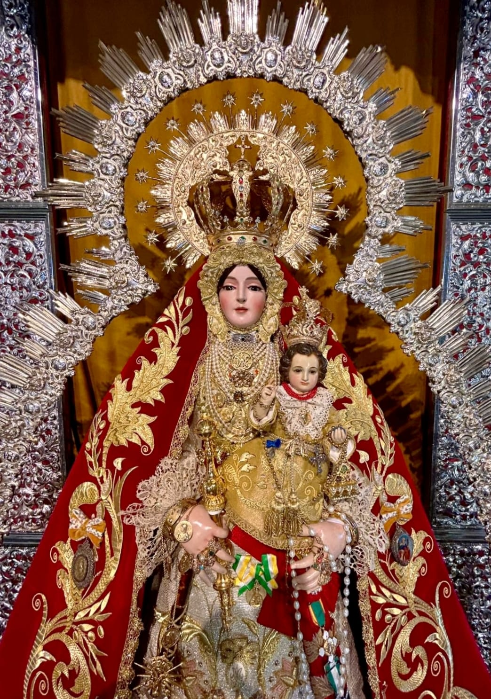
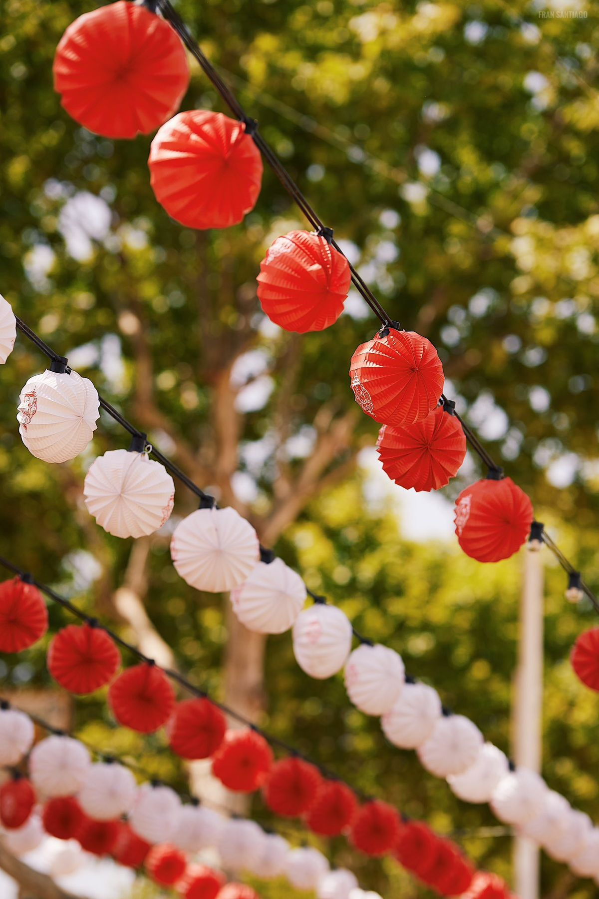
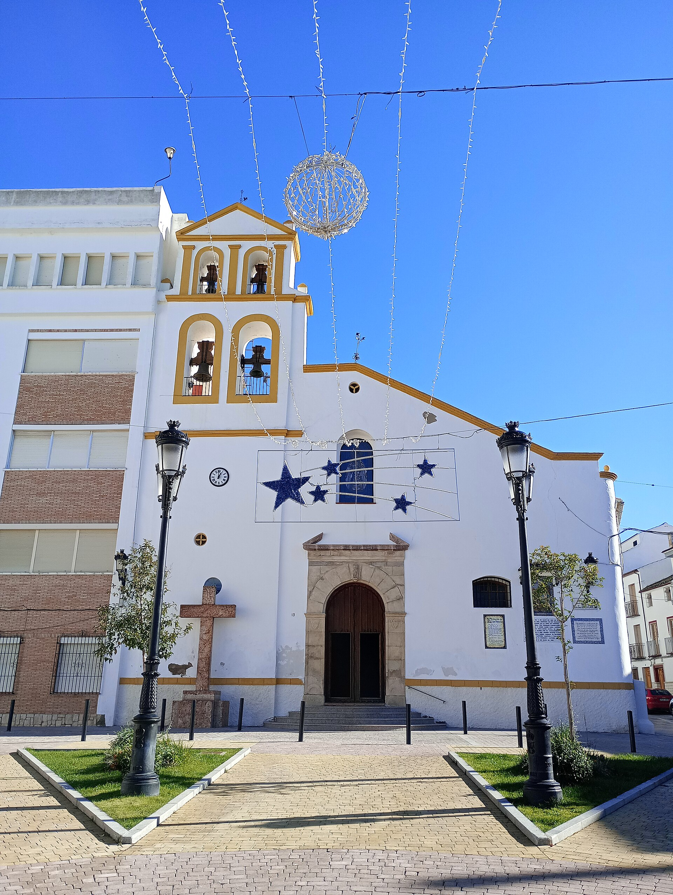
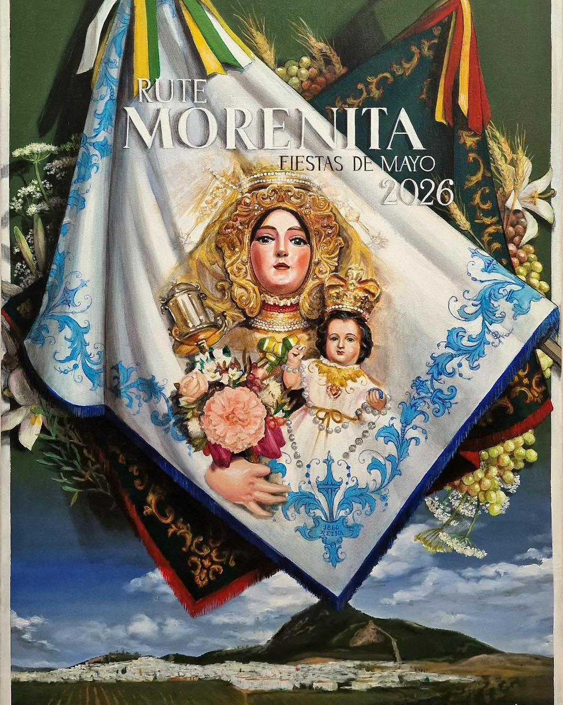
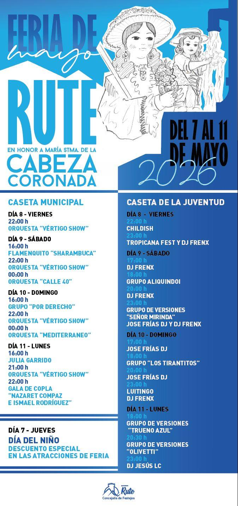
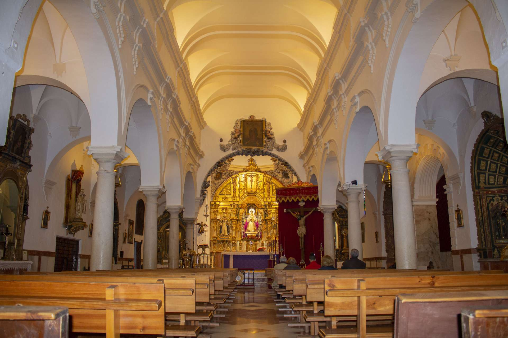

Ofrenda floral
La ofrenda floral todos los años realiza su salida de la parroquia de Nuestra Señora del Carmen.
La ofrenda floral todos los años realiza su salida de la parroquia de Nuestra Señora del Carmen.

Tanto la salida de nuestra Morenita de la mañana como de la tarde noche del segundo domingo de Mayo, se realiza desde su ermita de San Francisco de Asís.

La feria de Mayo se localiza en el paseo del Fresno, donde miles de personas pasan por ella, durante los días de festividad.

Esta plaza se encuentra justo a las puertas de la ermita donde descansa la imagen de nuestra Virgen durante todo el año.
Segundo sábado de mayo a las 20:00h.

La salida por la mañana de nuestra Morenita es sobre las 10:30h, mientras que por la noche es a las 20:30h.

La feria comienza el jueves 7 de mayo y finaliza el lunes 11 de mayo.

Su horario de verano de misas es de Lunes a Sábado a las 21h y los Domingos de 10h a 13h.